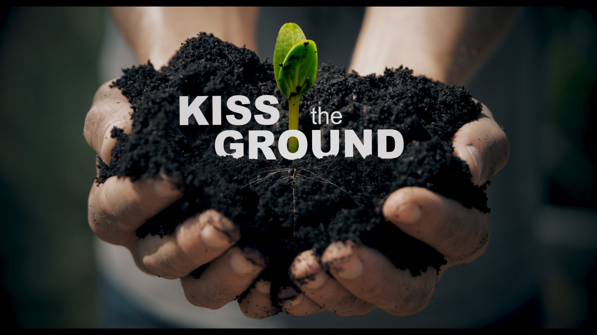

← Back to Home
Kiss the Ground
Kiss the Ground is a groundbreaking film that reveals a viable solution to the climate crisis. By regenerating the world’s soils, we can stabilize Earth’s climate, restore ecosystems, and create abundant food supplies. Using compelling graphics and NASA/NOAA footage, the film shows how soil can draw down atmospheric carbon, completing the climate puzzle.